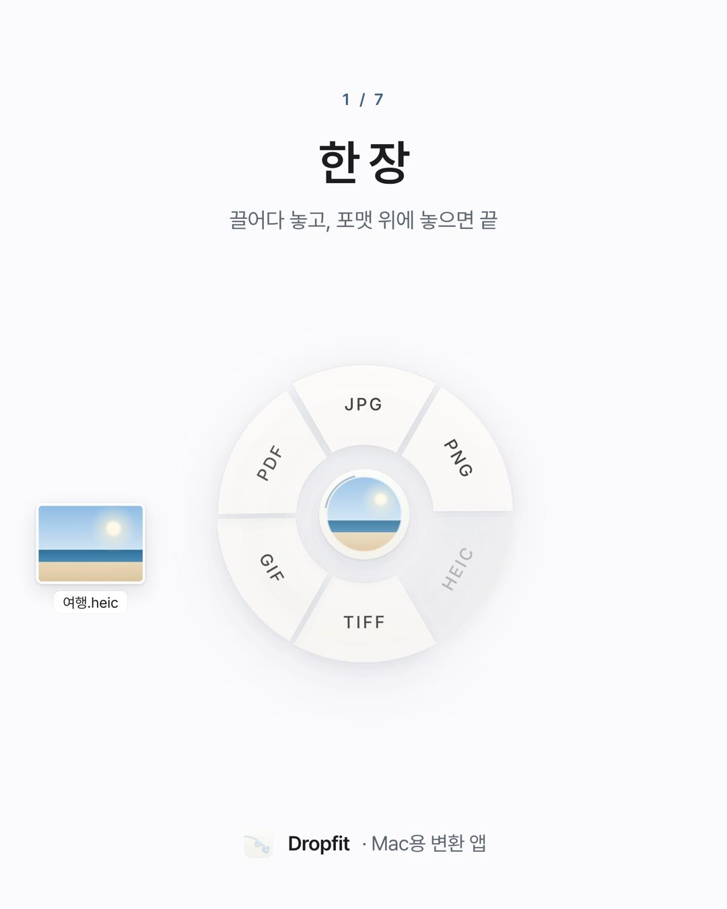

Photo too large to upload? How to get it under 1 MB on a Mac
When a site says “file too large,” select the file in Finder and press ⌘I to see its real size. For one photo, export it from Preview as JPEG with lower quality until it is about 10% under the limit. If you hit the same limit often, an app that saves to a set maximum size is faster. If the photo is an iPhone HEIC, convert it to JPG first.
Three things to check first
- Real size: Finder → select the file → ⌘I shows its size. For a 1 MB limit, aim under 900 KB, because some sites count 1 MB as 1,000 KB and others as 1,024 KB.
- Format: if the upload field accepts only JPG or PNG, iPhone photos (HEIC) are rejected whatever their size.
- Dimensions: ID photos and similar fields often require a ratio or pixel size. Shrinking the file alone won’t pass them.
1. One photo: lower the quality in Preview
- Open the photo in Preview.
- Choose File → Export and set Format to JPEG.
- Move the Quality slider left and watch the file size below it. Save when it is about 10% under the limit.
This also turns a HEIC photo into JPEG. It works one photo at a time, so a batch takes a while.
2. Many photos, or the same limit again and again: Dropfit for Mac
Every site has its own limit, 1 MB, 2 MB, 500 KB, so the same photo gets exported again and again. I built Dropfit for Mac for this. Set the limit once, and every photo you drag onto it is saved under that size.

- Right-click the circle, open Settings…, and set Maximum JPG size in a preset (for example, 1 MB).
- Drag photos, or a folder of photos, onto that preset on the circle.
- JPGs under the size you set are saved next to the originals. The originals stay as they are.
- iPhone HEIC photos dropped on the same preset become JPG at the right size.
- If a photo can’t reach the size without falling apart, Dropfit tells you: “Some files are larger than the size you set.”
- Nothing is uploaded. Everything happens on your Mac, so ID and document photos stay with you.
Converting is free. Presets with a maximum size are a Dropfit Pro feature (one-time purchase, no subscription), and the first 14 days are free with no card.
Questions
I made the photo smaller, but it still says “too large.” Why?
Some sites count 1 MB as 1,000 KB, so aim about 10% under the limit. If it still fails, check whether the site accepts only JPG and whether it requires certain pixel dimensions.
Can I shrink many photos under 1 MB at once on a Mac?
macOS lets you pick an image size, not a file size. Dropfit for Mac saves every photo you drag under the maximum size set in a JPG preset (Dropfit Pro, free for the first 14 days).
Why won’t my iPhone photos upload?
When the iPhone Camera format is set to High Efficiency, photos are saved as HEIC, which sites that accept only JPG reject. Converting to JPG fixes the format and lets you set the size at the same time.
Related
Dropfit for Mac · Converting is free · 14-day Dropfit Pro trial
See Dropfit for MacSources: Apple Preview User Guide (convert image file types), Apple Mac User Guide (Get Info). Dropfit behavior checked against the 1.0 app text. Checked 2026-11-19.